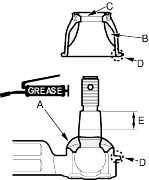
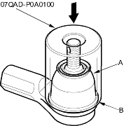

Attachment, 42 mm, 07QAD-P0A0100
- Remove the boot from the tie-rod end, and wipe the old grease off the ball pin.
- Pack the lower area of the ball pin (A) with fresh multipurpose grease.

- Pack the interior of the new boot (B) and lip (C) with fresh multipurpose grease.
Note these items when installing new grease:
- Keep grease off the boot installation section (D) and the tapered section (E) if the ball pin.
- Do not allow dust, dirt, or other foreign materials to enter the boot.
- Install the new boot (A) using the special tool. The boot must not have a gap at the boot installation sections (B). After installing the boot, check the ball pin tapered section for grease contamination, and wipe it if necessary.
